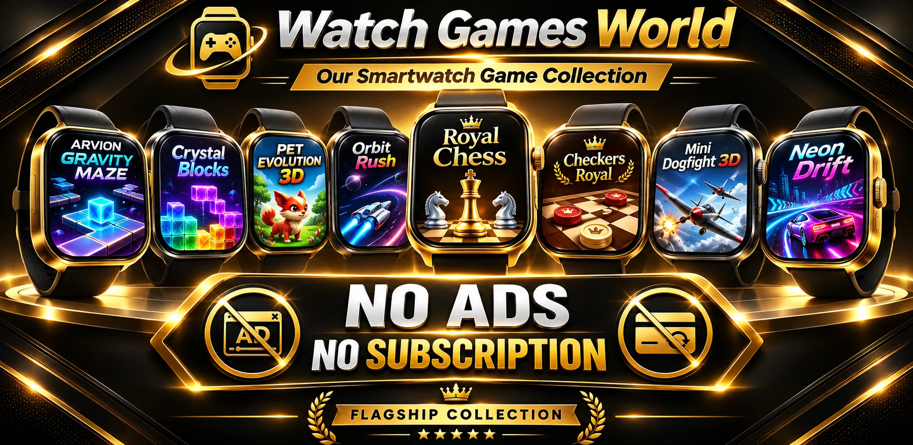

Gry na zegarek
Gry na zegarekMY PET 3D
Opiekuj się wirtualnym zwierzakiem na zegarku.
🌐 WYBIERZ JĘZYK · 14
Gry i aplikacje na zegarki z Androidem (Wear OS). Wear OS to system dla smartwatchy oparty na Androidzie. Przed instalacją sprawdź zgodność swojego zegarka w Google Play.
Lista orientacyjna na podstawie 82 wpisów urządzeń, w tym wariantów. Obecność modelu na liście nie potwierdza systemu Wear OS ani działania wszystkich naszych gier i aplikacji. Sprawdź system zegarka i zgodność konkretnego produktu w Google Play.

Wielkie wrażenia. Mały ekran.
Odkryj nasze gry i aplikacje na zegarki Wear OS. Przeglądaj prawdziwe zrzuty ekranu, sprawdzaj funkcje i przechodź do Google Play.
Szukasz gier na zegarek z Androidem i Wear OS? Poznaj nasze gry ze zwierzakami, szachy, warcaby, klasyczne gry zręcznościowe, wyścigi, gry sportowe i logiczne. Watch Games World prezentuje oryginalne grafiki naszych produktów oraz odsyła do ich szczegółowych opisów.
Znajdziesz tu również aplikacje Wear OS do muzyki, filmów, podglądu kamery telefonu, przesyłania plików i tarcz zegarka. Część funkcji wymaga aplikacji towarzyszącej na telefonie. Oddzielamy produkty dostępne w Google Play od zapowiedzi. Zgodność urządzenia sprawdzaj w sklepie.
Wyłącznie nasze gry i aplikacje na smartwatche Wear OS.
Gry na zegarekOpiekuj się wirtualnym zwierzakiem na zegarku.
 Gry na zegarek
Gry na zegarekSzachy przystosowane do ekranu zegarka Wear OS.
 Gry na zegarek
Gry na zegarekKlasyczne warcaby na nadgarstku.
 Gry na zegarek
Gry na zegarekKlasyczny Snake ze sterowaniem na zegarku.
 Gry na zegarekBędzie dostępna
Gry na zegarekBędzie dostępnaKolorowa gra ze spadającymi blokami na telefon i zegarek Wear OS. Usuwaj linie i twórz kombinacje.
 Gra na telefon AndroidWkrótce
Gra na telefon AndroidWkrótceSzybka gra zręcznościowa na telefony Android, z prostym sterowaniem i krótkimi rundami.
 Gry na zegarek
Gry na zegarekZręcznościowa gra w rozbijanie cegiełek na Wear OS.
 Gry na zegarekWkrótce
Gry na zegarekWkrótceZwierzęta 3D i opieka nad nimi na Wear OS.
 Gry na zegarekWkrótce
Gry na zegarekWkrótcePrzeprowadzaj kulkę przez wymagające labirynty.
 Gry na zegarekWkrótce
Gry na zegarekWkrótceWalki powietrzne i misje na ekranie zegarka.
 Gry na zegarekWkrótce
Gry na zegarekWkrótceNeonowe wyścigi ze sterowaniem dotykowym i ruchem.
 Gry na zegarekWkrótce
Gry na zegarekWkrótceŁowienie ryb w różnych łowiskach na zegarku i telefonie.
 Gry na zegarekWkrótce
Gry na zegarekWkrótceGolf dopasowany do telefonu i zegarka.
 Gry na zegarekWkrótce
Gry na zegarekWkrótceKoszykarskie wyzwania na Wear OS.
 Gry na zegarekWkrótce
Gry na zegarekWkrótceRzutki, tryby gry i trening na smartwatchu.
 Aplikacje na zegarek
Aplikacje na zegarekMuzyka, filmy, podgląd kamery i pliki na zegarku.
 Aplikacje na zegarek
Aplikacje na zegarekOdtwarzacz muzyki i wideo offline na Androida, z playlistami, Bluetooth i obsługą Wear OS.
 Aplikacje na zegarek
Aplikacje na zegarekNagrywaj na zegarku Wear OS, steruj nagrywaniem telefonu i przesyłaj pliki audio.
 Aplikacje na zegarekBędzie dostępna
Aplikacje na zegarekBędzie dostępnaPrzesyłaj i odtwarzaj muzykę na zegarku Wear OS.
 Aplikacje na zegarekBędzie dostępna
Aplikacje na zegarekBędzie dostępnaPrzesyłaj i oglądaj filmy na zegarku Wear OS.
 Aplikacje na zegarek
Aplikacje na zegarekSteruj kamerą telefonu i oglądaj podgląd na zegarku.
 Aplikacje na zegarek
Aplikacje na zegarekCyfrowe, klasyczne i tematyczne tarcze Wear OS.
 Aplikacje na zegarekWkrótce
Aplikacje na zegarekWkrótcePrzesyłaj pliki między telefonem i zegarkiem.
 Aplikacje na zegarekWkrótce
Aplikacje na zegarekWkrótcePodgląd kompatybilnych kamer inspekcyjnych na zegarku.
 Aplikacje na zegarekWkrótce
Aplikacje na zegarekWkrótceSterowanie multimediami z poziomu nadgarstka.
Nie znaleziono pasujących gier ani aplikacji.